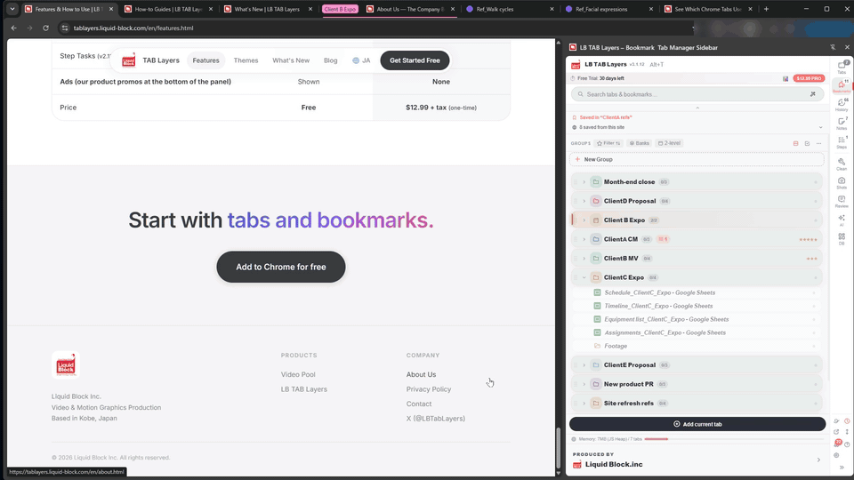
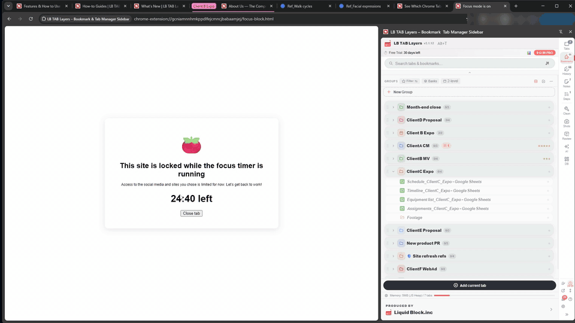

For when you want to focus, or need a small handy tool.
Focus Timer
Block the sites in chosen groups for 25 minutes. A PIN is needed to stop early
Where: The clock at the bottom of the right rail / right-click a group
Right-click a group and choose “Block / unblock during Focus Timer”, then click the clock button. For 25 minutes, that group's sites can't be opened. To stop partway through, enter the PIN.

When you want to focus, block the sites you choose for 25 minutes.

To stop partway through, enter the PIN.
Clock & timer
Clock, date and weather. A timer of 20 to 60 minutes
Where: Switch the pin bar's row
Switch the pin bar's row to use the clock, date and weather, and a timer of 20 to 60 minutes. The weather comes from an outside service.
AI sidebar
Ask for a summary, or ask questions, with the page you're viewing attached (built-in Chrome AI or your own Gemini key)
Where: “AI” in the right rail
Click “AI” in the right rail to ask for a summary or ask questions with the page you're viewing attached. It uses the AI built into Chrome, or your own Gemini API key.
AI suggestions PRO
AI finds saved items related to your search words
Where: The wand at the right of the search box
Click the wand at the right of the search box and AI looks for saved items related to what you typed. PRO feature (available during the free trial).
RSS
Turn a group into an RSS folder and see new posts with images. Detect a page's RSS feed and add it
Where: Creating or editing a group
When you create or edit a group, choose “Use as an RSS feed folder” and that group becomes an RSS folder that shows new posts with images. If the page you're viewing has an RSS feed, it can be detected and added.
Notification badges
Show unread counts for Gmail, Slack and others on groups and tabs
Where: Automatic
When a tab such as Gmail or Slack has unread items, the count appears on the group and tab rows.
Small window & playlist PRO
Open a page in a small window. Play a group's YouTube videos one after another
Where: Right-click a saved tab or a group
From a saved tab's right-click menu, open the page in a small window. From a group's right-click menu, play that group's YouTube videos one after another. PRO feature (available during the free trial).